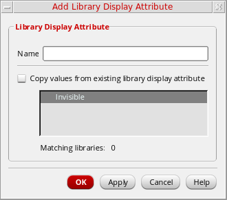

Creating New Library Attributes
You can create new library display attributes and define the display settings for them. Attributes that you add are saved in the current_working_dir/.cadence/libManager/displayPrefs file. You can add any number of attributes. Cadence recommends that you never edit the displayPrefs file manually.
To create new library display attributes,
- Select Edit – Display Settings.
-
In the Display Settings form, in the Library Display Attributes section, click Add.
The Add Library Display Attribute form appears. - In the Name field, specify a name for the attribute. Names cannot include spaces.
- To copy display settings from another attribute, select Copy values from existing library attribute, then select the attribute from the available list.
-
Click OK/Apply.
The new attributes are listed in the Library Display Attributes listbox in the Display Settings form. - If you did not copy display settings from another attribute, select them in the Display Libraries section of the Display Settings form.
- Click OK/Apply/Save.
The new attributes are saved in the current_working_dir/.cadence/libManager/displayPrefs file. If the file does not exist, it is created. If you clicked Save, your changes are saved to this file immediately; if you clicked OK or Apply, the file is updated when you exit the Library Manager.
To customize attributes on a per-site or per-project basis, copy the displayPrefs file to the appropriate directories. The Library Manager uses CSF search to find attributes.
For more information, see Library Display Settings.
Related Topics
Setting Display Options for Libraries
Setting Attributes on a Library
Return to top